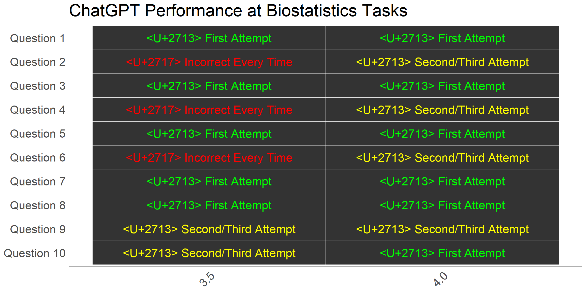
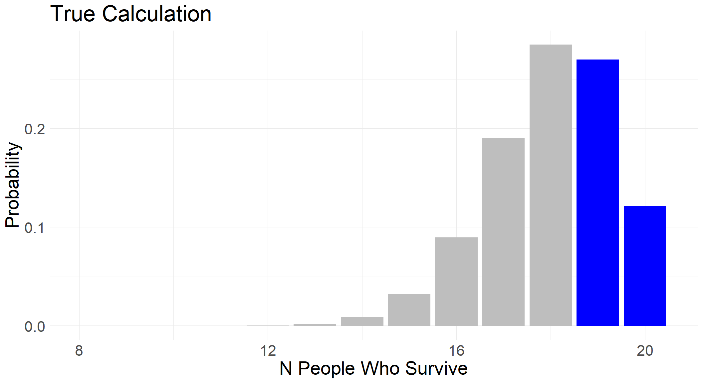
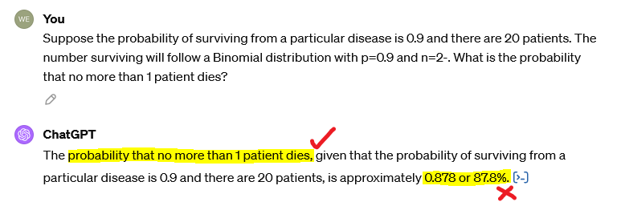
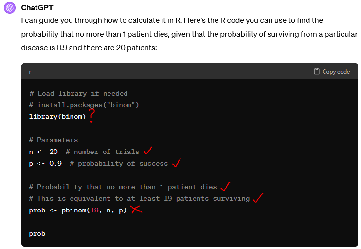
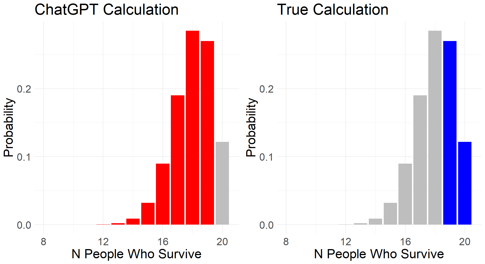
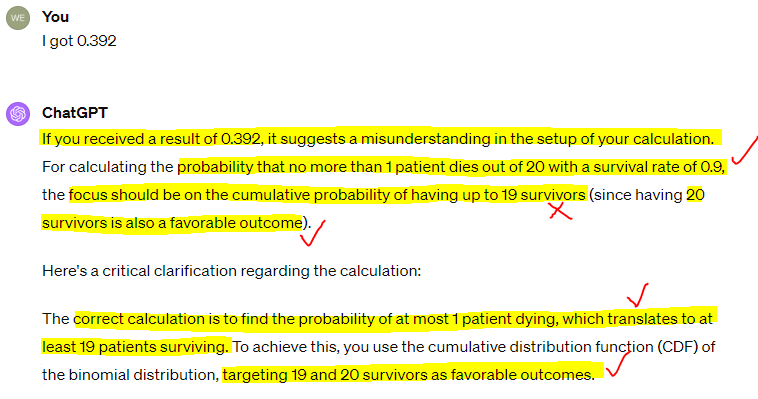
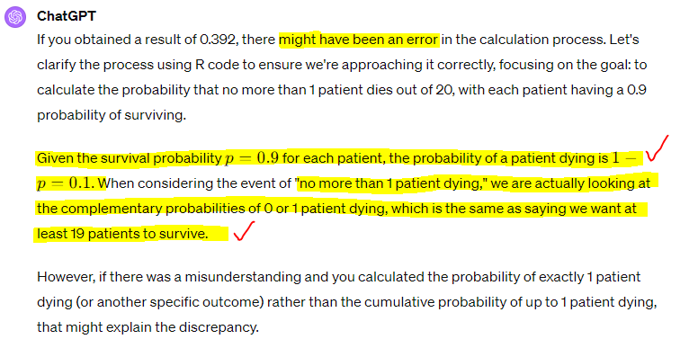
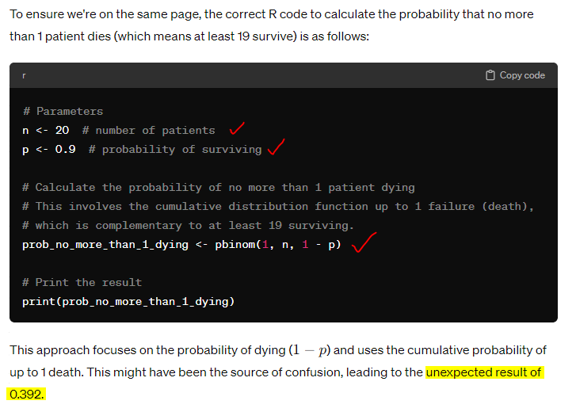

Overview
If you haven’t read part one of this two-part series on AI, do that first here:
https://the-kids-biostats.github.io/posts/2024_08_08_ai_part_one/ai_part_one.html
Last time we looked at three cases where our use of AI aided our productivity and gave us the desired result. In this post, we’ll be looking at the other side of the coin, to situations where AI has struggled and where attempts to pursue its use would hinder our productivity and have us produced errors.
To demonstrate this, we’ll look through the results of a few published papers and the concepts they introduce. Then, as a wrap of Part 1 and 2, we propose some guidelines that can be used to maximise ones efficiency when using (or thinking about using) AI.
Examples
Example 1 - Jagged Frontier
Our first example is drawn from a 2023 paper which looked at the effect of AI use on productivity and quality of work. You can read the paper here:
https://papers.ssrn.com/sol3/papers.cfm?abstract_id=4573321
It introduces a very helpful concept - the ‘Jagged Frontier’. Below we use ggplot2 to demonstrate this idea.
What is the Jagged Frontier?
Imagine you have 5 tasks to complete today, and you are trying to decide which of these you can delegate to AI (in this case, ChatGPT). You might have in mind that each task has some implicit difficulty associated with it (rated 1- 10), and your perception of current AI technology is that in is capable of tackling tasks up to a difficulty of 5. This is represented by the blue dashed line below.
Your 5 tasks have various difficulties, represented by the black points. At this point, based on your perception of the difficulty of your tasks and the capability of AI, you would assign tasks 2, 3 and 5 to ChatGPT, since these have a difficulty of <=5.
Unfortunately, the reality is that our perception of difficulty does not line up well with AI’s capabilities. As we have seen in the last post, it can complete some pretty incredible tasks, such as coding Shiny apps and performing advanced statistical analyses. But as we will also see later, it can struggle with some pretty mundane tasks.
And so the capability of AI cannot be measured by the blue dashed line, but rather the red, jagged line, a seemingly random level of capability which is unrelated to our ideas of difficulty. This is what is referred to as the “Jagged Frontier”.
Why should we care?
When a task can successfully be completed using AI, we refer to that task as being ‘Inside the Frontier’; that is, below the red jagged line above. When AI would struggle or be unable to complete a task, we refer to that as being ‘Outside the Frontier’.
The study above set out to investigate the difference in worker productivity when AI is used for tasks considered ‘Inside the Frontier’ compared with those considered ‘Outside the Frontier’. A large study was set up, with the following methodology:
- All 758 participants (experts in the relevant field) complete a baseline project without any AI use. Speed and quality are measured.
- Participants are randomised into one of four groups (see table below).
| Metric | Inside.Frontier | Outside.Frontier |
|---|---|---|
| ChatGPT | 189 | 190 |
| ChatGPT + Overview | 190 | 189 |
- Those in the “Inside Frontier” group were assigned a project that had been determined beforehand to be within the capabilities of ChatGPT 3.5. In contrast, the “Outside Frontier” group were assigned a project beyond the capabilities of ChatGPT 3.5.
- The participants were further divided into “ChatGPT” and “ChatGPT + Overview” groups. The latter received some training on prompt engineering (how be to use ChaptGPT) before undertaking the project.
- All participants completed their project, and their speed and quality was compared to their own individual baseline score.
The results are quite striking:
| Metric | Inside.Frontier |
|---|---|
| ChatGPT | |
| Speed | 28% |
| Quality | 38% |
| ChatGPT + Overview | |
| Speed | 23% |
| Quality | 43% |
Using ChatGPT for the project ‘Inside the Frontier’ resulted in considerable improvements in both speed and quality of work, regardless of whether participants received training.
But perhaps more interestingly, the groups with projects ‘Outside the Frontier’ saw a decrease in quality of work, even though the work was completed faster…
We will return to these results in the discussion below.
Example 2 - Biostatistical Questions
As promised, we are going to investigate some examples of tasks that lie ‘Outside the Frontier’. These examples are drawn from this paper:
https://www.ncbi.nlm.nih.gov/pmc/articles/PMC10646144/
As a brief summary, 10 different biostatistics-related problems were posed to ChatGPT 3.5 and subsequently to ChatGPT 4.0. For each problem, the team attempted up to three times to get the correct answer from the AI. The results are below:

While, ChatGPT 4.0 made significant improvements on 3.5, 40% of answers were still incorrect on the first attempt.
We attempted to reproduce one of these results, using their Question 2, which was:
“Suppose the probability of surviving from a particular disease is 0.9 and there are 20 patients. The number surviving will follow a Binomial distribution with p=0.9 and n=20. What is the probability that no more than 1 patient dies?”
The expected answer to this question is 39.2%, and there are two ways we could get this answer in R using the pbinom function:
size <- 20 # Number of trials
prob <- 0.1 # Probability of *dying*
pbinom(1, size, prob)[1] 0.391747prob <- 0.9 # Probability of *surviving*
1 - pbinom(18, size, prob)[1] 0.391747Graphically, we can highlight the area of the distribution we are interested in calculating - this will be helpful later to compare with ChatGPT’s responses.

First Attempt:
Below is our prompt history with ChatGPT 4.0 as we attempted to reproduce the results from the paper - namely, using a maximum of three attempts to get the correct answer.
Note.
Highlighted sections and markings were added for emphasis and to assist with the live presentation that these two blog posts have been adapted from.

On ChatGPT’s first attempt, it gives us an answer of 87.8%, a far cry from 39.2%! The blue icon at the end of its answer reveals the Python code it used to generate this answer, however we asked it to provide the equivalent code in R:

We can run the code here to verify the answer:
n <- 20 # number of trials
p <- 0.9 # probability of success
prob <- pbinom(19, n, p)
prob[1] 0.8784233Interestingly, the binom package is not actually used!
The AI has seemingly ‘understood’ the question, as shown by its correct inference that “no more than 1 patient dies” is equivalent to “at least 19 patients surviving” in its code documentation. However, the code provided has gotten things the wrong way around.
Above, we showed the correct area of the distribution we are interested in. Now we can see this side by side with what the AI code is calculating:

Second Attempt
In the paper, the way in which ChatGPT was prompted to try again at a particular problem was to simply say “I got

We see that the AI has doubled down and is suggesting we have misunderstood the question. It describes the problem back to us perfectly, with one exception:
“The focus should be on the cumulative probability of having up to 19 survivors.”
While this is incorrect, it is the first time anything it has said has matched the calculation it carried out.
Third Attempt
With final attempt, it is up for debate whether the response is correct or not:


The code it provides does give the correct answer now, however there is still a ‘belief’ that 0.392 was and is incorrect.
n <- 20 # number of trials
p <- 0.9 # probability of success
prob_no_more_than_1_dying <- pbinom(1, n, 1- p)
print(prob_no_more_than_1_dying)[1] 0.391747Takeaway
Without knowing how pbinom works (and even then, noticing it had been implemented incorrectly!), it is likely that a user would trust the initial incorrect answer. The AI showed signs of understanding the question, the code documentation made sense, and the code itself looked completely plausible…
How much more so for more complicated scenarios?
Discussion
When we presented this material to researchers at the Institute, our objective was to steer listeners away from the two extreme attitudes they might take towards AI use in their work.
The first extreme is to not use AI whatsoever. As we have clearly seen from part one of this blog series, and the results of the ‘jagged frontier’ study, the increases in productivity can be astonishing. If any tool increases our work speed by 30-40% while maintaining or even improving quality, it ought to be used.
The second extreme is the overuse and/or over-reliance on AI. Some tasks are simply outside the current capabilities of AI (not to say they will remain so in the future). To use AI in such circumstances wastes time at best, and at worst produces inaccuracies that remain unnoticed by us - will the reader of our work know? The worked biostatistics example above shows how easy it is to be convinced by the confident language of AI as it repeats an answer that is patently incorrect.
Where to from here? Our recommendations…
The ‘jagged frontier’ of AI is invisible to us, and hence we often cannot know whether the task we are about to delegate is within its capability or not (and it doesn’t know!). For this reason, we propose the following guidelines to ensure you are using AI effectively and responsibly:
- You should be able to verify the output is true/accurate.
- The time it would take to verify the AI output should be less than the time it would take to achieve the same output yourself.
Looking back at our examples throughout the two posts:
Weather plot
In this example, we could verify the more complex plot by visually comparing it to simple plots we coded ourselves. Additionally, we could understand the R code that AI produced. Whether the use of AI in this case was justified or not depends on how quickly we could have remembered all the ggplot2 commands to do this ourselves!
Statistical Analysis
For the statistical analysis, we were well-placed to verify the suggestions of ChatGPT. However, this would be a dangerous use-case for someone who is unfamiliar with statistical methodology - advanced or otherwise. We know that the suggested hierarchical mixed models is a good suggestion, but this would not be immediately verifiable to everyone. Therefore we would recommend against this use-case for non-statisticians.
Shiny App
This is probably the best example of AI saving time and increasing quality. The objective is simple - a Shiny App which takes and randomises data. Even as someone who has never coded a Shiny App before, it is easy to verify whether it works by simply using the app.
Mathematical Questions
Finally, we have seen that AI can make mistakes when calculating numerical results, and remain confidently incorrect in the face of correction. To verify the answer requires working line by line through each piece of code to ensure it is doing what we asked. Hence it is unlikely to save us time and seemingly likely to be incorrect.
Conclusion
These two posts have been a summation of our thoughts as they have developed through the first year or so of incorporating AI into our workflows. We have sought to experiment with different prompts to see where we can use AI to improve our productivity and where it hampers it. The two guidelines above have been helpful to avoid our over-reliance on AI, and our experiences with effective AI have helped to avoid under-utilisation.
We’d love to hear your thoughts and ideas on these two posts. Do you disagree with our recommendations and/or conclusions? Or perhaps you have some additional ones you would like to suggest.
Further reading
A similar paper to Example 2, testing responses to a set of 70 medical questions: https://onlinelibrary.wiley.com/doi/full/10.1111/iej.13985
Despite the humourous title, a fascinating paper on where Artificial Intelligence is, well, intelligent: https://link.springer.com/article/10.1007/s10676-024-09775-5